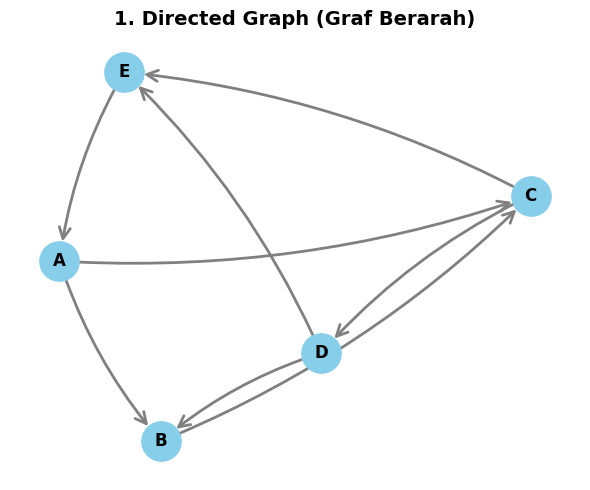
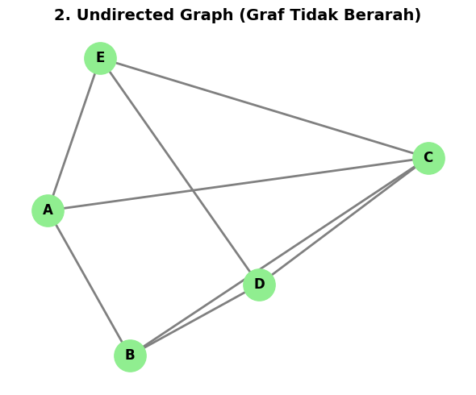
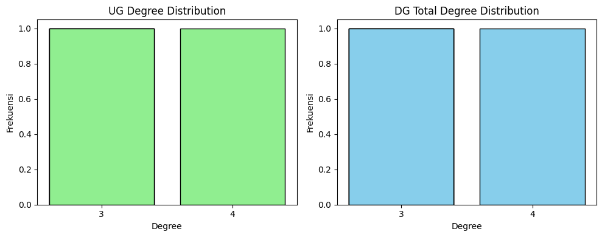

Tugas Analisis Web Structure Mining#
Bagian ini berisi kode inisialisasi untuk membuat graf berarah (Directed) dan graf tidak berarah (Undirected) dengan 5 vertex (A, B, C, D, E) menggunakan library NetworkX.
Agar perhitungan lintasan terpendek (shortest path) dan diameter dapat dilakukan tanpa error, struktur graf dirancang sedemikian rupa sehingga bersifat strongly connected (saling terhubung kuat) untuk Directed Graph.
import networkx as nx
import matplotlib.pyplot as plt
import pandas as pd
import numpy as np
# 1. Inisialisasi Vertex
vertices = ['A', 'B', 'C', 'D', 'E']
# 2. Definisikan hubungan (Edges) untuk Directed Graph
# Relasi dibuat melingkar dengan beberapa bypass agar Strongly Connected
directed_edges = [
('A', 'B'), ('B', 'C'), ('C', 'D'), ('D', 'E'), ('E', 'A'), # Siklus utama
('A', 'C'), ('C', 'E'), ('D', 'B') # Hubungan bypass
]
# Membuat Directed Graph (DiGraph)
DG = nx.DiGraph()
DG.add_nodes_from(vertices)
DG.add_edges_from(directed_edges)
# 3. Definisikan hubungan (Edges) untuk Undirected Graph
# Menggunakan struktur relasi yang sama (tanpa arah panah)
undirected_edges = directed_edges
# Membuat Undirected Graph (Graph)
UG = nx.Graph()
UG.add_nodes_from(vertices)
UG.add_edges_from(undirected_edges)
print("Graf berhasil diinisialisasi!")
print(f"Directed Graph: {DG.number_of_nodes()} node, {DG.number_of_edges()} edge (Strongly Connected: {nx.is_strongly_connected(DG)})")
print(f"Undirected Graph: {UG.number_of_nodes()} node, {UG.number_of_edges()} edge (Connected: {nx.is_connected(UG)})")
Graf berhasil diinisialisasi!
Directed Graph: 5 node, 8 edge (Strongly Connected: True)
Undirected Graph: 5 node, 8 edge (Connected: True)
A. Visualisasi Graf#
Berikut adalah pembuatan dua gambar terpisah untuk memvisualisasikan Directed Graph dan Undirected Graph dengan layout yang rapi dan warna node yang berbeda.
import networkx as nx
import matplotlib.pyplot as plt
# Memastikan variabel graf tersedia di dalam namespace sel ini
vertices = ['A', 'B', 'C', 'D', 'E']
directed_edges = [
('A', 'B'), ('B', 'C'), ('C', 'D'), ('D', 'E'), ('E', 'A'),
('A', 'C'), ('C', 'E'), ('D', 'B')
]
DG = nx.DiGraph()
DG.add_nodes_from(vertices)
DG.add_edges_from(directed_edges)
UG = nx.Graph()
UG.add_nodes_from(vertices)
UG.add_edges_from(directed_edges)
# Mengatur posisi node agar konsisten
pos = nx.spring_layout(DG, seed=42)
# 1. Visualisasi Directed Graph dengan arrow perbaikan bug
plt.figure(figsize=(6, 5))
nx.draw_networkx_nodes(DG, pos, node_color='skyblue', node_size=800)
nx.draw_networkx_labels(DG, pos, font_size=12, font_family='sans-serif', font_weight='bold')
nx.draw_networkx_edges(
DG, pos,
arrowstyle='->',
arrowsize=20,
edge_color='gray',
width=2,
connectionstyle="arc3,rad=0.1",
node_size=800
)
plt.title("1. Directed Graph (Graf Berarah)", fontsize=14, fontweight='bold')
plt.axis('off')
plt.tight_layout()
plt.savefig('directed_graph.png', dpi=300)
plt.show()
# 2. Visualisasi Undirected Graph
plt.figure(figsize=(6, 5))
nx.draw_networkx_nodes(UG, pos, node_color='lightgreen', node_size=800)
nx.draw_networkx_labels(UG, pos, font_size=12, font_family='sans-serif', font_weight='bold')
nx.draw_networkx_edges(UG, pos, edge_color='gray', width=2, node_size=800) # Tanpa panah
plt.title("2. Undirected Graph (Graf Tidak Berarah)", fontsize=14, fontweight='bold')
plt.axis('off')
plt.tight_layout()
plt.savefig('undirected_graph.png', dpi=300)
plt.show()


B. Analisis Directed Graph dan Undirected Graph#
1. Degree Setiap Vertex#
rumus derajat (Degree) simpul \(i\) pada graf tidak berarah adalah: $\(k_i = \sum_{j} A_{ij}\)$
Sedangkan pada graf berarah, derajat terbagi menjadi:
In-Degree (jumlah edge masuk): \(k_i^{in} = \sum_{j} A_{ji}\)
Out-Degree (jumlah edge keluar): \(k_i^{out} = \sum_{j} A_{ij}\)
Total Degree: \(k_i^{total} = k_i^{in} + k_i^{out}\)
import networkx as nx
import pandas as pd
# Deklarasi lokal untuk mencegah NameError
vertices = ['A', 'B', 'C', 'D', 'E']
directed_edges = [
('A', 'B'), ('B', 'C'), ('C', 'D'), ('D', 'E'), ('E', 'A'),
('A', 'C'), ('C', 'E'), ('D', 'B')
]
DG = nx.DiGraph()
DG.add_nodes_from(vertices)
DG.add_edges_from(directed_edges)
UG = nx.Graph()
UG.add_nodes_from(vertices)
UG.add_edges_from(directed_edges)
# Menghitung derajat
ug_degrees = dict(UG.degree())
dg_in_degrees = dict(DG.in_degree())
dg_out_degrees = dict(DG.out_degree())
dg_total_degrees = {node: dg_in_degrees[node] + dg_out_degrees[node] for node in vertices}
# Menampilkan Tabel Terpisah sesuai Prompt
df_ug_degree = pd.DataFrame({
'Vertex': vertices,
'Degree (k_i)': [ug_degrees[v] for v in vertices]
})
df_dg_degree = pd.DataFrame({
'Vertex': vertices,
'In-Degree (k_in)': [dg_in_degrees[v] for v in vertices],
'Out-Degree (k_out)': [dg_out_degrees[v] for v in vertices],
'Total Degree (k_total)': [dg_total_degrees[v] for v in vertices]
})
print("=== Tabel Degree: Undirected Graph ===")
display(df_ug_degree)
print("\n=== Tabel Degree: Directed Graph ===")
display(df_dg_degree)
=== Tabel Degree: Undirected Graph ===
| Vertex | Degree (k_i) | |
|---|---|---|
| 0 | A | 3 |
| 1 | B | 3 |
| 2 | C | 4 |
| 3 | D | 3 |
| 4 | E | 3 |
=== Tabel Degree: Directed Graph ===
| Vertex | In-Degree (k_in) | Out-Degree (k_out) | Total Degree (k_total) | |
|---|---|---|---|---|
| 0 | A | 1 | 2 | 3 |
| 1 | B | 2 | 1 | 3 |
| 2 | C | 2 | 2 | 4 |
| 3 | D | 1 | 2 | 3 |
| 4 | E | 2 | 1 | 3 |
2. Rata-rata Lintasan Terpendek (Average Shortest Path Length)#
Rumus Perhitungan: $\(\text{Average Shortest Path Length} = \frac{1}{N(N-1)} \sum_{i \neq j} d(v_i, v_j)\)\( Di mana \)d(v_i, v_j)\( adalah jarak lintasan terpendek dari vertex \)i\( ke \)j\(, dan total pasangan kemungkinan adalah \)N(N-1) = 5 \times 4 = 20$.
import networkx as nx
import pandas as pd
# Deklarasi lokal untuk mencegah NameError
vertices = ['A', 'B', 'C', 'D', 'E']
directed_edges = [
('A', 'B'), ('B', 'C'), ('C', 'D'), ('D', 'E'), ('E', 'A'),
('A', 'C'), ('C', 'E'), ('D', 'B')
]
DG = nx.DiGraph()
DG.add_nodes_from(vertices)
DG.add_edges_from(directed_edges)
UG = nx.Graph()
UG.add_nodes_from(vertices)
UG.add_edges_from(directed_edges)
# Menampilkan matriks rincian jarak terpendek antar-pasangan simpul
dist_ug = dict(nx.all_pairs_shortest_path_length(UG))
dist_dg = dict(nx.all_pairs_shortest_path_length(DG))
matrix_ug = pd.DataFrame(dist_ug).reindex(index=vertices, columns=vertices)
matrix_dg = pd.DataFrame(dist_dg).reindex(index=vertices, columns=vertices)
total_dist_ug = matrix_ug.values.sum()
total_dist_dg = matrix_dg.values.sum()
print("=== Rincian Jarak Jaringan Undirected Graph ===")
display(matrix_ug)
print(f"Total Akumulasi Jarak (UG) = {total_dist_ug}")
print(f"Average Shortest Path (UG) = {total_dist_ug} / 20 = {total_dist_ug/20:.4f}\n")
print("=== Rincian Jarak Jaringan Directed Graph ===")
display(matrix_dg)
print(f"Total Akumulasi Jarak (DG) = {total_dist_dg}")
print(f"Average Shortest Path (DG) = {total_dist_dg} / 20 = {total_dist_dg/20:.4f}")
=== Rincian Jarak Jaringan Undirected Graph ===
| A | B | C | D | E | |
|---|---|---|---|---|---|
| A | 0 | 1 | 1 | 2 | 1 |
| B | 1 | 0 | 1 | 1 | 2 |
| C | 1 | 1 | 0 | 1 | 1 |
| D | 2 | 1 | 1 | 0 | 1 |
| E | 1 | 2 | 1 | 1 | 0 |
Total Akumulasi Jarak (UG) = 24
Average Shortest Path (UG) = 24 / 20 = 1.2000
=== Rincian Jarak Jaringan Directed Graph ===
| A | B | C | D | E | |
|---|---|---|---|---|---|
| A | 0 | 3 | 2 | 2 | 1 |
| B | 1 | 0 | 2 | 1 | 2 |
| C | 1 | 1 | 0 | 2 | 2 |
| D | 2 | 2 | 1 | 0 | 3 |
| E | 2 | 2 | 1 | 1 | 0 |
Total Akumulasi Jarak (DG) = 34
Average Shortest Path (DG) = 34 / 20 = 1.7000
Penjelasan Singkat:
Pada Undirected Graph, rata-rata lintasan terpendek lebih kecil karena jalur komunikasi antar-node bersifat dua arah (timbal balik tanpa hambatan arah).
Pada Directed Graph, jalurnya lebih panjang karena pergerakan dibatasi oleh arah anak panah, sehingga memerlukan rute memutar untuk mencapai node tertentu.
3. Koefisien Klasterisasi (Clustering Coefficient)#
rumus Clustering Coefficient lokal untuk simpul \(i\) pada Undirected Graph adalah: $\(C_i = \frac{T_i}{k_i(k_i - 1) / 2} = \frac{2 T_i}{k_i(k_i - 1)}\)\( Di mana \)T_i\( melambangkan jumlah hubungan segitiga aktual di sekitar simpul \)i$.
Untuk Directed Graph, NetworkX menggunakan algoritma Fagiolo (2007) yang menormalisasi relasi segitiga berarah terhadap semua kemungkinan interaksi berarah.
import networkx as nx
import pandas as pd
# Deklarasi lokal untuk mencegah NameError
vertices = ['A', 'B', 'C', 'D', 'E']
directed_edges = [
('A', 'B'), ('B', 'C'), ('C', 'D'), ('D', 'E'), ('E', 'A'),
('A', 'C'), ('C', 'E'), ('D', 'B')
]
DG = nx.DiGraph()
DG.add_nodes_from(vertices)
DG.add_edges_from(directed_edges)
UG = nx.Graph()
UG.add_nodes_from(vertices)
UG.add_edges_from(directed_edges)
clust_ug = nx.clustering(UG)
clust_dg = nx.clustering(DG)
df_clust_ug = pd.DataFrame({
'Vertex': vertices,
'Sisi Segitiga Riil (Ti)': [nx.triangles(UG, v) for v in vertices],
'Degree (k)': [UG.degree(v) for v in vertices],
'Clustering Coeff': [clust_ug[v] for v in vertices]
})
df_clust_dg = pd.DataFrame({
'Vertex': vertices,
'Clustering Coeff (Fagiolo)': [clust_dg[v] for v in vertices]
})
print("=== Clustering: Undirected Graph ===")
display(df_clust_ug)
print(f"Average Clustering (UG): {nx.average_clustering(UG):.4f}\n")
print("=== Clustering: Directed Graph ===")
display(df_clust_dg)
print(f"Average Clustering (DG): {nx.average_clustering(DG):.4f}")
=== Clustering: Undirected Graph ===
| Vertex | Sisi Segitiga Riil (Ti) | Degree (k) | Clustering Coeff | |
|---|---|---|---|---|
| 0 | A | 2 | 3 | 0.666667 |
| 1 | B | 2 | 3 | 0.666667 |
| 2 | C | 4 | 4 | 0.666667 |
| 3 | D | 2 | 3 | 0.666667 |
| 4 | E | 2 | 3 | 0.666667 |
Average Clustering (UG): 0.6667
=== Clustering: Directed Graph ===
| Vertex | Clustering Coeff (Fagiolo) | |
|---|---|---|
| 0 | A | 0.333333 |
| 1 | B | 0.333333 |
| 2 | C | 0.333333 |
| 3 | D | 0.333333 |
| 4 | E | 0.333333 |
Average Clustering (DG): 0.3333
4. Distribusi Derajat (Degree Distribution)#
Distribusi derajat merepresentasikan frekuensi kemunculan nilai derajat tertentu di dalam jaringan, dinyatakan dalam \(P(k)\).
import networkx as nx
import pandas as pd
import matplotlib.pyplot as plt
# Deklarasi lokal untuk mencegah NameError
vertices = ['A', 'B', 'C', 'D', 'E']
directed_edges = [
('A', 'B'), ('B', 'C'), ('C', 'D'), ('D', 'E'), ('E', 'A'),
('A', 'C'), ('C', 'E'), ('D', 'B')
]
DG = nx.DiGraph()
DG.add_nodes_from(vertices)
DG.add_edges_from(directed_edges)
UG = nx.Graph()
UG.add_nodes_from(vertices)
UG.add_edges_from(directed_edges)
ug_degrees = dict(UG.degree())
dg_in_degrees = dict(DG.in_degree())
dg_out_degrees = dict(DG.out_degree())
dg_total_degrees = {node: dg_in_degrees[node] + dg_out_degrees[node] for node in vertices}
# Menghitung tabel frekuensi
def hitung_distribusi_tabel(nilai_derajat):
df_ser = pd.Series(nilai_derajat).value_counts().sort_index()
return pd.DataFrame({
'Degree (k)': df_ser.index,
'Frekuensi N(k)': df_ser.values,
'Probabilitas P(k)': df_ser.values / len(nilai_derajat)
})
print("=== Distribusi Derajat: Undirected Graph ===")
display(hitung_distribusi_tabel(list(ug_degrees.values())))
print("\n=== Distribusi Derajat: Directed Graph (Total Degree) ===")
display(hitung_distribusi_tabel(list(dg_total_degrees.values())))
# Membuat plot visualisasi bar
fig, axes = plt.subplots(1, 2, figsize=(10, 4))
axes[0].bar([str(k) for k in ug_degrees.values()], [1]*len(vertices), color='lightgreen', edgecolor='black')
axes[0].set_title("UG Degree Distribution")
axes[0].set_xlabel("Degree")
axes[0].set_ylabel("Frekuensi")
axes[1].bar([str(k) for k in dg_total_degrees.values()], [1]*len(vertices), color='skyblue', edgecolor='black')
axes[1].set_title("DG Total Degree Distribution")
axes[1].set_xlabel("Degree")
axes[1].set_ylabel("Frekuensi")
plt.tight_layout()
plt.show()
=== Distribusi Derajat: Undirected Graph ===
| Degree (k) | Frekuensi N(k) | Probabilitas P(k) | |
|---|---|---|---|
| 0 | 3 | 4 | 0.8 |
| 1 | 4 | 1 | 0.2 |
=== Distribusi Derajat: Directed Graph (Total Degree) ===
| Degree (k) | Frekuensi N(k) | Probabilitas P(k) | |
|---|---|---|---|
| 0 | 3 | 4 | 0.8 |
| 1 | 4 | 1 | 0.2 |

5. Derajat Rata-rata (Average Degree)#
Undirected Graph: $\(\bar{k} = \frac{2L}{N}\)$
Directed Graph: $\(\bar{k}_{in} = \bar{k}_{out} = \frac{L}{N}, \quad \bar{k}_{total} = \frac{2L}{N}\)$
N = len(vertices)
L_ug = UG.number_of_edges()
L_dg = DG.number_of_edges()
# Perhitungan UG
avg_deg_ug = (2 * L_ug) / N
# Perhitungan DG
avg_in_dg = L_dg / N
avg_out_dg = L_dg / N
avg_total_dg = (2 * L_dg) / N
print("=== Undirected Graph ===")
print(f"Rumus: 2 * L / N = 2 * {L_ug} / {N}")
print(f"Hasil Average Degree: {avg_deg_ug:.2f}\n")
print("=== Directed Graph ===")
print(f"Rata-rata In-Degree (L/N) : {L_dg} / {N} = {avg_in_dg:.2f}")
print(f"Rata-rata Out-Degree (L/N) : {L_dg} / {N} = {avg_out_dg:.2f}")
print(f"Rata-rata Total Degree (2L/N): 2 * {L_dg} / {N} = {avg_total_dg:.2f}")
=== Undirected Graph ===
Rumus: 2 * L / N = 2 * 8 / 5
Hasil Average Degree: 3.20
=== Directed Graph ===
Rata-rata In-Degree (L/N) : 8 / 5 = 1.60
Rata-rata Out-Degree (L/N) : 8 / 5 = 1.60
Rata-rata Total Degree (2L/N): 2 * 8 / 5 = 3.20
6. Kepadatan Graf (Graph Density)#
rumus kepadatan graf (Density) adalah:
Undirected Graph: $\(D = \frac{2L}{N(N-1)}\)$
Directed Graph: $\(D = \frac{L}{N(N-1)}\)$
import networkx as nx
# Deklarasi lokal untuk mencegah NameError
vertices = ['A', 'B', 'C', 'D', 'E']
directed_edges = [
('A', 'B'), ('B', 'C'), ('C', 'D'), ('D', 'E'), ('E', 'A'),
('A', 'C'), ('C', 'E'), ('D', 'B')
]
DG = nx.DiGraph()
DG.add_nodes_from(vertices)
DG.add_edges_from(directed_edges)
UG = nx.Graph()
UG.add_nodes_from(vertices)
UG.add_edges_from(directed_edges)
N = len(vertices)
L_ug = UG.number_of_edges()
L_dg = DG.number_of_edges()
# Menghitung batas maksimum tepi sebagai Integer
max_edges_ug = int(N * (N - 1) / 2)
max_edges_dg = int(N * (N - 1))
density_ug = L_ug / max_edges_ug
density_dg = L_dg / max_edges_dg
print("=== Kepadatan Graf (Density) ===")
print(f"Undirected Graph: 2 * {L_ug} / ({N} * {N-1}) = {L_ug}/{max_edges_ug} = {density_ug:.4f} (80% koneksi terbentuk)")
print(f"Directed Graph: {L_dg} / ({N} * {N-1}) = {L_dg}/{max_edges_dg} = {density_dg:.4f} (40% koneksi terbentuk)")
=== Kepadatan Graf (Density) ===
Undirected Graph: 2 * 8 / (5 * 4) = 8/10 = 0.8000 (80% koneksi terbentuk)
Directed Graph: 8 / (5 * 4) = 8/20 = 0.4000 (40% koneksi terbentuk)
Interpretasi Konteks Riil:
Nilai 0.8000 (80%) pada Undirected Graph menunjukkan jaringan ini sangat padat, di mana sebagian besar node berpotensi saling bertukar informasi secara timbal balik.
Nilai 0.4000 (40%) pada Directed Graph menunjukkan tingkat peredaran data satu arah yang moderat, sehingga masih menyisakan ruang 60% rute baru yang belum terealisasi.
7. Matriks Ketetanggaan (Adjacency Matrix)#
Matriks ketetanggaan menunjukkan ada atau tidaknya hubungan langsung antarsimpul.
import networkx as nx
import pandas as pd
# Deklarasi lokal untuk mencegah NameError
vertices = ['A', 'B', 'C', 'D', 'E']
directed_edges = [
('A', 'B'), ('B', 'C'), ('C', 'D'), ('D', 'E'), ('E', 'A'),
('A', 'C'), ('C', 'E'), ('D', 'B')
]
DG = nx.DiGraph()
DG.add_nodes_from(vertices)
DG.add_edges_from(directed_edges)
UG = nx.Graph()
UG.add_nodes_from(vertices)
UG.add_edges_from(directed_edges)
# Membuat Matriks Ketetanggaan
adj_ug = nx.to_numpy_array(UG, nodelist=vertices, dtype=int)
adj_dg = nx.to_numpy_array(DG, nodelist=vertices, dtype=int)
df_adj_ug = pd.DataFrame(adj_ug, index=vertices, columns=vertices)
df_adj_dg = pd.DataFrame(adj_dg, index=vertices, columns=vertices)
# Melakukan pengecekan simetri matematis
is_symmetric_ug = (df_adj_ug.values == df_adj_ug.values.T).all()
is_symmetric_dg = (df_adj_dg.values == df_adj_dg.values.T).all()
print("=== Adjacency Matrix: Undirected Graph ===")
display(df_adj_ug)
print(f"Sifat Matriks Simetris: {is_symmetric_ug} (Karena hubungan bersifat timbal balik)")
print("\n=== Adjacency Matrix: Directed Graph ===")
display(df_adj_dg)
print(f"Sifat Matriks Simetris: {is_symmetric_dg} (Karena hubungan bersifat satu arah/asimetris)")
=== Adjacency Matrix: Undirected Graph ===
| A | B | C | D | E | |
|---|---|---|---|---|---|
| A | 0 | 1 | 1 | 0 | 1 |
| B | 1 | 0 | 1 | 1 | 0 |
| C | 1 | 1 | 0 | 1 | 1 |
| D | 0 | 1 | 1 | 0 | 1 |
| E | 1 | 0 | 1 | 1 | 0 |
Sifat Matriks Simetris: True (Karena hubungan bersifat timbal balik)
=== Adjacency Matrix: Directed Graph ===
| A | B | C | D | E | |
|---|---|---|---|---|---|
| A | 0 | 1 | 1 | 0 | 0 |
| B | 0 | 0 | 1 | 0 | 0 |
| C | 0 | 0 | 0 | 1 | 1 |
| D | 0 | 1 | 0 | 0 | 1 |
| E | 1 | 0 | 0 | 0 | 0 |
Sifat Matriks Simetris: False (Karena hubungan bersifat satu arah/asimetris)
8. Diameter Jaringan (Network Diameter)#
Diameter adalah lintasan terpendek maksimum di dalam graf.
import networkx as nx
# Deklarasi lokal untuk mencegah NameError
vertices = ['A', 'B', 'C', 'D', 'E']
directed_edges = [
('A', 'B'), ('B', 'C'), ('C', 'D'), ('D', 'E'), ('E', 'A'),
('A', 'C'), ('C', 'E'), ('D', 'B')
]
DG = nx.DiGraph()
DG.add_nodes_from(vertices)
DG.add_edges_from(directed_edges)
UG = nx.Graph()
UG.add_nodes_from(vertices)
UG.add_edges_from(directed_edges)
diameter_ug = nx.diameter(UG)
diameter_dg = nx.diameter(DG)
# Pembuktian pasangan penentu diameter
print(f"Diameter Undirected Graph: {diameter_ug}")
print(" -> Dibuktikan oleh rute terpendek terpanjang A-D atau B-E (Jarak = 2 langkah)")
print(f"\nDiameter Directed Graph: {diameter_dg}")
print(" -> Dibuktikan oleh rute searah terpanjang B->A (B->C->D->E->A) atau E->D (Jarak = 3 langkah)")
Diameter Undirected Graph: 2
-> Dibuktikan oleh rute terpendek terpanjang A-D atau B-E (Jarak = 2 langkah)
Diameter Directed Graph: 3
-> Dibuktikan oleh rute searah terpanjang B->A (B->C->D->E->A) atau E->D (Jarak = 3 langkah)
Penjelasan Singkat:
Diameter Undirected Graph menunjukkan jarak maksimal tercepat yang dibutuhkan informasi untuk berpindah dari satu ujung simpul ke ujung simpul lainnya tanpa hambatan arah.
Diameter Directed Graph bernilai lebih besar karena keterbatasan arah edge mengharuskan rute yang dilalui memutar lebih jauh.
C. Kesimpulan dan Perbandingan Karakteristik#
Berikut adalah tabel rangkuman perbandingan karakteristik kedua graf:
Metrik Analisis |
Undirected Graph |
Directed Graph |
Keterangan Hubungan |
|---|---|---|---|
Rata-rata Jarak Lintasan |
1.2000 |
1.7000 |
UG memiliki rute lebih fleksibel tanpa sekat arah panah |
Diameter Jaringan |
2 |
3 |
Di-Graph dibatasi arah searah sehingga membutuhkan rute memutar |
Kepadatan (Density) |
0.8000 |
0.4000 |
Kapasitas tepi maksimum DG adalah dua kali lipat dari UG |
Average Clustering |
0.6667 |
0.3333 |
UG membentuk klaster segitiga lebih padat dibanding DG |
Rata-rata Derajat (Total) |
3.20 |
3.20 |
Rata-rata total kapasitas interaksi bernilai sama |
Sifat Matriks |
Simetris |
Asimetris |
Menunjukkan hubungan timbal-balik vs satu arah |